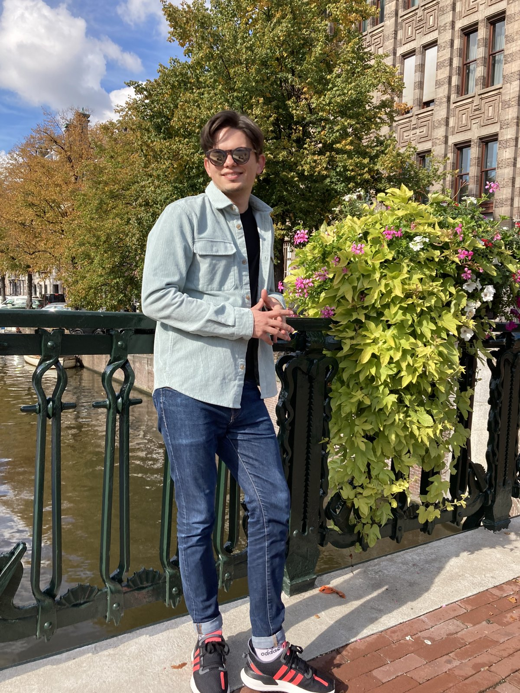
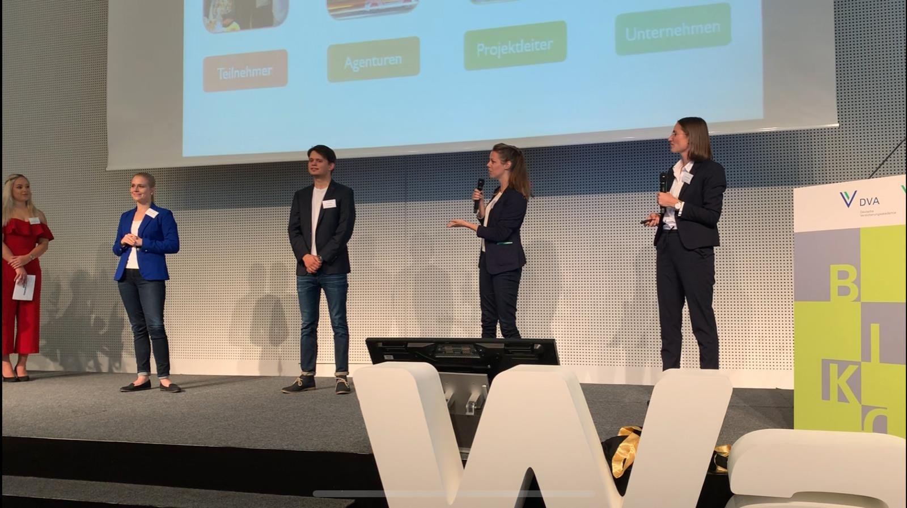
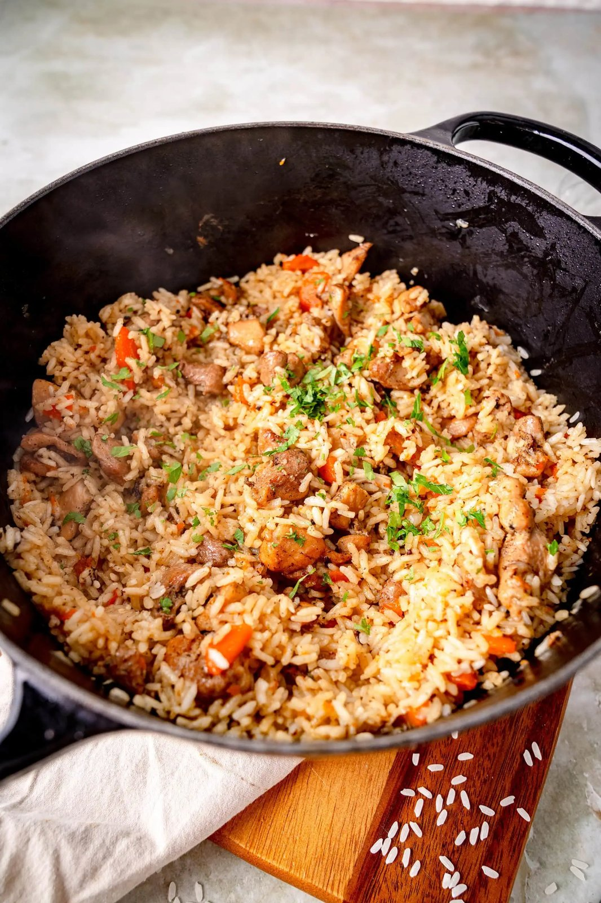
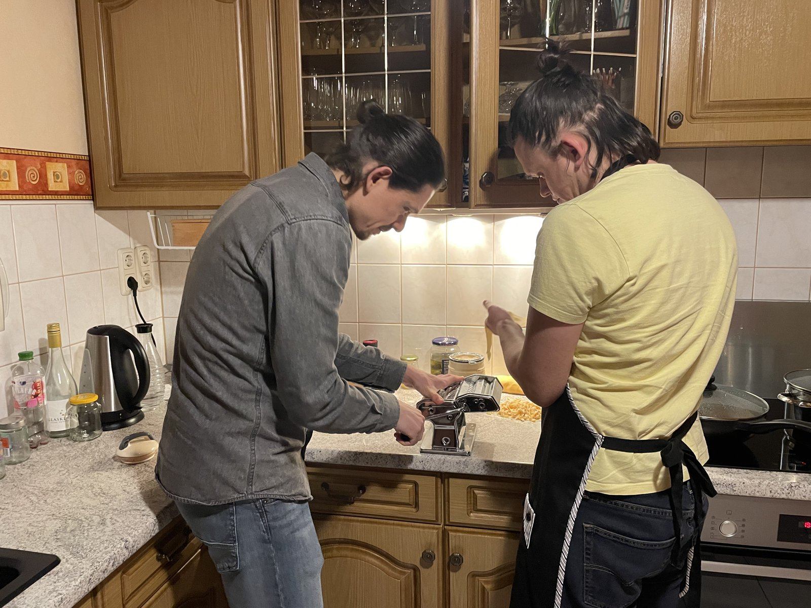
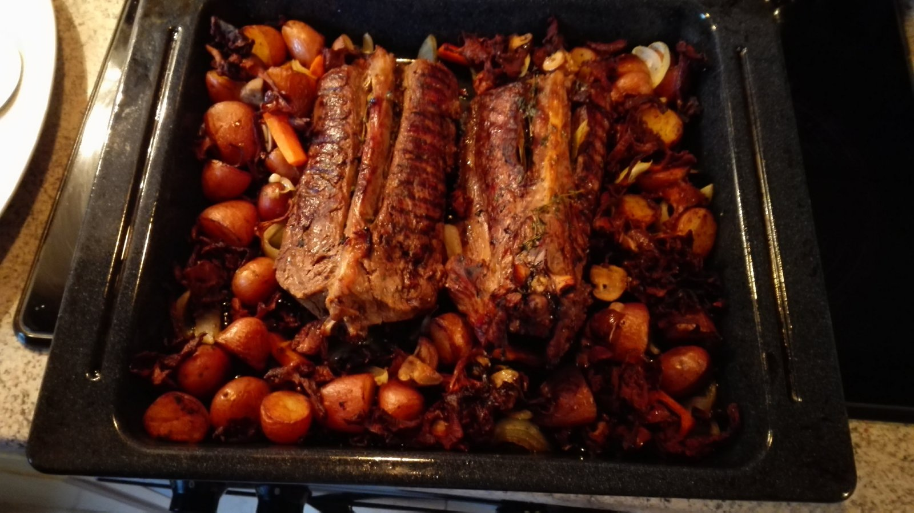

Den Dingen auf den Grund gehen.
Recherchieren, Quellen einordnen und Zusammenhänge verstehen. Auch dann, wenn die Antwort nicht auf der ersten Seite steht.
Daten im Kopf. Ideen im Gepäck.
Und meistens etwas auf dem Herd.
Ich studiere Informations- und Datenmanagement, bringe gern Ordnung in komplexe Themen und probiere am liebsten selbst aus, was daraus werden kann.
Meine Projekte entdecken
Ich bin Daniel. Ich mag gute Fragen, Menschen mit Ideen und das Gefühl, wenn aus „Müsste man mal“ etwas wird.
Mein Weg hat mit einer Ausbildung zum Kaufmann für Versicherungen und Finanzen angefangen. Danach kamen Beratung, Vertrieb und Verwaltung dazu. Auch Lohnabrechnung, Disposition und Datenmigration habe ich schon auf dem Tisch gehabt.
Heute studiere ich an der FH Potsdam Informations- und Datenmanagement. Mich interessiert, wie aus vielen einzelnen Informationen Wissen wird, das verständlich, auffindbar und langfristig nutzbar bleibt.
Nebenbei engagiere ich mich in der Hochschulgremienarbeit und im Potsdamer Kneipenchor. Da geht es oft um dasselbe: zuhören, Menschen zusammenbringen, organisieren und dranbleiben.
Recherchieren, Quellen einordnen und Zusammenhänge verstehen. Auch dann, wenn die Antwort nicht auf der ersten Seite steht.
Informationen strukturieren, dokumentieren und wieder auffindbar machen. Damit mehr Zeit und Energie für Kreativität bleibt.
Ob Projektabstimmung, Kundenkontakt oder hinter der Bar: Ich bin gern dabei, wenn aus einer Idee etwas Konkretes wird.
Projekte aus meinem Studium.
Gemeinsam erarbeitet, für echte Fragen.
Für „On the Menu“ haben wir einen automatisierten Workflow konzipiert, um historische Speisekarten der Staatsbibliothek zu transkribieren und Gerichte digital zu erfassen.
Mit Escoffiers „Küchenführer“ als Grundlage haben wir überlegt, wie sich Zutaten und Zubereitungen zuordnen lassen. Die Idee dahinter: Essgewohnheiten der gehobenen Gesellschaft von damals untersuchbar machen.
Zum Projekt im Stabi LabIm Austausch mit der Technical University of Kenya und den Kenya National Archives haben wir in Nairobi an einer günstigen Lösung zur Digitalisierung historischer Karten gearbeitet.
Weil die passende Ausstattung fehlte, haben wir einen offenen, bezahlbaren Workflow erarbeitet. Dabei ging es auch um Metadaten, Standards und Dokumentation, damit das Wissen vor Ort weitergenutzt werden kann.
Zum Projekt an der FH PotsdamAußerdem: Entwicklung eines Informationssystems im Praxisprojekt mit dem Deutschen GeoForschungsZentrum (GFZ). Theorie auf echte Anforderungen treffen lassen.
Ein kaufmännischer Hintergrund, ein neugieriger Blick und Erfahrung darin, auch praktisch mit anzupacken.
Zum zweiten Mal ausgezeichnet.
Darüber freue ich mich sehr.
FH Potsdam. Recherche, Datenbanken, Usability, Wissensorganisation und digitale Prozesse.
Administration, E-Learning, Praktikumsorganisation, Open Access und Wissenschaftskommunikation.
Ausbildung und Berufspraxis in Versicherungen und Finanzen. Dazu Büroorganisation, Lohnabrechnung, Disposition und Datenmigration.
Service und Eisverkauf im italienischen Eiscafé, Mithilfe in der Küche und Cocktailbar. Mit der mobilen Bar auf Veranstaltungen in ganz Deutschland.

Als Teil eines Teams war ich Preisträger des Bildungspreises der deutschen Versicherungswirtschaft. Im LVM InnovationCamp gehörten Ideenentwicklung und Pitchen dazu.
Keine Kochausbildung. Dafür viel Lust,
selbst zu machen und Neues auszuprobieren.



Ich schaue gern über den eigenen Tellerrand. Was kochen Menschen anderswo? Wie funktioniert eine Technik? Und kriege ich das zu Hause auch hin?
Meistens hilft: einfach anfangen.Mobile Cocktailbar beim Christopher Street Day. Dann kam der Starkregen. Ein kurzer Clip aus einer Zeit, in der Improvisation ganz praktisch wurde.
12 Sekunden / Originalaufnahme, ohne TonZu sehen ist die mobile Bar unter einem roten Zeltdach. Draußen fällt starker Regen, der Bereich an der Bar steht unter Wasser. Der Clip enthält keinen Ton.
Über gute Inhalte, neue Projekte oder die Frage,
was als Nächstes auf den Herd kommt.